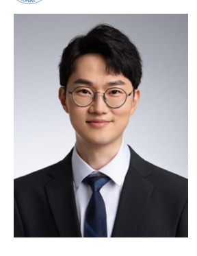

Members · Professors
Professor
Principal Investigator profile, education, honors, awards, and service.

Principal Investigator
Cheolhee Yoo, PhD
Assistant Professor, Smart City Convergence Major, Pusan National University
Dr. Yoo studies urban climate characterization, heat-risk assessment, industrial land and carbon-emission analysis, and GeoAI-based urban remote sensing.
Positions
- Assistant Professor, Smart City Convergence Major, Pusan National University
- JPL Postdoc Fellow, NASA Jet Propulsion Laboratory / California Institute of Technology
- Research Assistant Professor, Department of Land Surveying and Geo-Informatics, The Hong Kong Polytechnic University
- Research Intern, RIKEN Center for Advanced Intelligence Project
Education
- Urban and Environmental Engineering, UNIST
- Urban and Environmental Engineering, UNIST, Summa Cum Laude
Research topics
Professor
Honors, awards, and service
Honors / Awards have been moved into the Professor page under Members.
- Highly Cited Paper AwardKorean Society of Remote Sensing, 2023
- Top 30 ReviewerISPRS Journal of Photogrammetry and Remote Sensing, 2021 and 2022
- Best Research AwardDepartment of Urban and Environmental Engineering, UNIST, 2022
- Talent Award of KoreaMinistry of Education, South Korea, 2020
- Global PhD FellowshipNational Research Foundation of Korea
- Environment Minister's AwardEnvironmental Spatial Information Research Papers Competition, 2017
Synergistic activities
Editorial Board Member, ISPRS Journal of Photogrammetry and Remote Sensing; Editorial Board Member, GIScience & Remote Sensing; Guest Editor, Remote Sensing; invited speaker and session chair for GeoAI and sustainable smart-city topics.